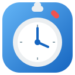

Questões no estilo TCF, DELF, DALF e TEF — organizadas em conjuntos por nível e por matéria, com caderno de revisão e estatísticas completas no seu Meu Espaço.
Resolver conjuntos de questões e acompanhar sua evolução.
Acompanhar os conjuntos que você já começou e rever o resultado dos que já concluiu.
Novos formatos de questões para tornar a prática ainda mais dinâmica.

A prova completa do TCF Canada, com correção e notas TCF e NCLC.
NovoCriar conjuntos personalizados, escolhendo níveis, categorias, quantidade de questões e tempo.
Gráficos, evolução e caderno de erros: tudo agora no seu Meu Espaço.